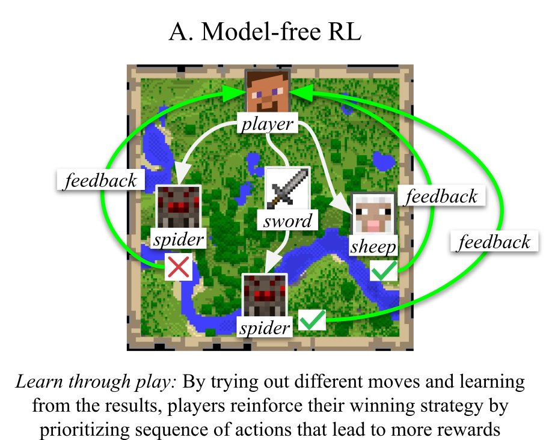
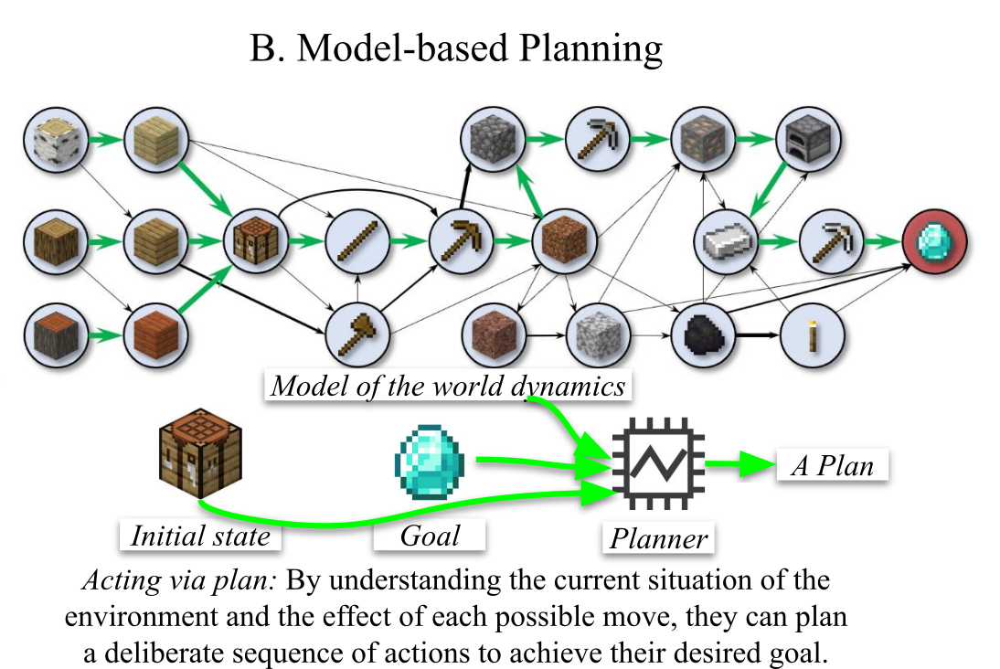
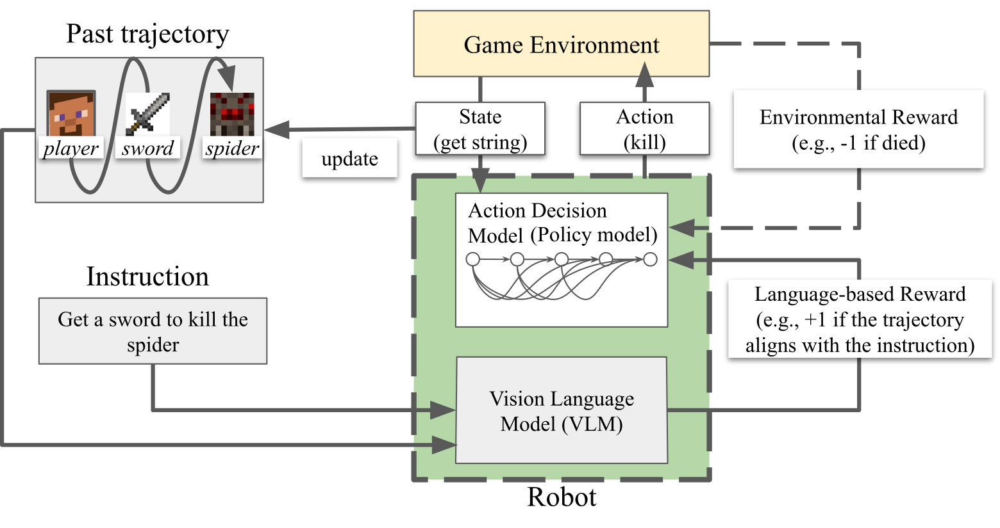
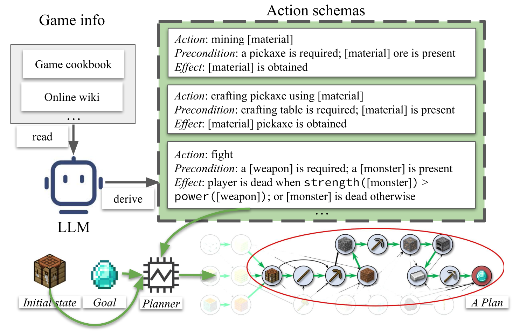

The Big Picture of My Research#
Integrating natural language into current AI system is a promising direction to democratize AI technology. Moreover, the vast knowledge embedded in natural language presents an opportunity to enhance AI-driven decision-making.
Imagine you want to instruct an AI system in Minecraft to build a house. Instead of programming a detailed set of construction rules or crafting reward functions that require expert insight, you simply tell the AI:
“Build a two-story house with a garden, using bricks for the walls and wood for the roof.”
A natural language (NL)-integrated sequential decision making (SDM) system shall leverage its understanding of natural language to break down this instruction into a series of actionable steps, and progressing to the desired goal you want!
Problem (TL;DR)#
The current design of these natural language-integrated AI systems has significant room for improvement. For example, the algorithms often lack robustness and efficiency, which undermines the reliability of sequential decision making.
Know more about the problem setting (two paradigms for sequential decision-making)


There are two primary paradigms for sequential decision-making: imagine you are playing Minecraft — a complex, open-ended problem-solving environment where players can build, explore, and survive. There are two ways you might approach this task.
My research during PhD study: Improving NL-integrated SDM systems under the two paradigms#
1. Model-free reinforcement learning (RL) -- (a) VLM + Language-based Reward + RL agent)

- Problem a: Noisy rewards from language models misguide AI agents.
- Solution: BiMI Reward Function (paper)
- Reduces false positives (e.g., rewarding irrelevant actions).
- Combines mutual information and thresholding for robustness.
- Result: Faster learning in navigation tasks (e.g., robots avoiding obstacles).
2. Model-based automated planning -- (b) LLM-Symbolic Planning Pipeline and (c) LLMs for plan generation)

-
Problem b: LLMs hallucinate plans or require expert validation.
-
Solution: Fully Automated LLM-Symbolic Pipeline (paper)
- Generates and validates action schemas without human intervention.
- Resolves ambiguity by exploring multiple interpretations of language.
- Result: Outperforms expert-dependent methods in scalability and bias reduction.
-
Problem c: There has been ongoing controversy about the genuine planning abilities of LLMs, with critics questioning whether their outputs reflect true reasoning or superficial statistical patterns.
-
Contribution: Reassessment of LLMs for end-to-end plan generation (paper)
- Conducts a rigorous re-evaluation of various strategies claiming to enhance LLM reasoning in end-to-end planning, using diverse metrics for a comprehensive assessment.
- Found that RL promotes better generalization than supervised fine-tuning (SFT) for training LLMs to plan
- Conducts a rigorous re-evaluation of various strategies claiming to enhance LLM reasoning in end-to-end planning, using diverse metrics for a comprehensive assessment.
Encrypted Section
Part of this article is encrypted with password:
Let’s team up! (*)#
If your lab or you’re passionate about enhancing the planning, reasoning, and decision-making capabilities of embodied agents or foundational models – I’d love to seek post-doc opportunities from you. Together, we can push the boundaries of intelligent AI systems, developing algorithms and theories that bridge language, logic, and real-world applications.
Interested? Let’s chat: Email | LinkedIn | Google Scholar
Publications#
-
submitted to ECAI 2025The Dark Side of Rich Rewards: Understanding and Mitigating Noise in VLM RewardsSukai Huang, Nir Lipovetzky and Trevor CohnarXiv ePrint 2024
While Vision-Language Models (VLMs) are increasingly used to generate reward signals for training embodied agents to follow instructions, our research reveals that agents guided by VLM rewards often underperform compared to those employing only intrinsic (exploration-driven) rewards, contradicting expectations set by recent work. We hypothesize that false positive rewards -- instances where unintended trajectories are incorrectly rewarded -- are more detrimental than false negatives. Our analysis confirms this hypothesis, revealing that the widely used cosine similarity metric is prone to false positive reward estimates. To address this, we introduce BiMI ({Bi}nary {M}utual {I}nformation), a novel reward function designed to mitigate noise. BiMI significantly enhances learning efficiency across diverse and challenging embodied navigation environments. Our findings offer a nuanced understanding of how different types of reward noise impact agent learning and highlight the importance of addressing multimodal reward signal noise when training embodied agents
-
ICAPS25Chasing Progress, Not Perfection: Revisiting Strategies for End-to-End LLM Plan GenerationSukai Huang, Trevor Cohn and Nir Lipovetzky35th International Conference on Automated Planning and Scheduling
The capability of Large Language Models (LLMs) to plan remains a topic of debate. Some critics argue that strategies to boost LLMs' reasoning skills are ineffective in planning tasks, while others report strong outcomes merely from training models on a planning corpus. This study reassesses recent strategies by developing an end-to-end LLM planner and employing diverse metrics for a thorough evaluation. We find that merely fine-tuning LLMs on a corpus of planning instances does not lead to robust planning skills, as indicated by poor performance on out-of-distribution test sets. At the same time, we find that various strategies, including Chain-of-Thought, do enhance the probability of a plan being executable. This indicates progress towards better plan quality, despite not directly enhancing the final validity rate. Among the strategies we evaluated, reinforcement learning with our novel `Longest Contiguous Common Subsequence' reward emerged as the most effective, contributing to both plan validity and executability. Overall, our research addresses key misconceptions in the LLM-planning literature; we validate incremental progress in plan executability, although plan validity remains a challenge. Hence, future strategies should focus on both these aspects, drawing insights from our findings.
-
AAAI25Planning in the Dark: LLM-Symbolic Planning Pipeline without ExpertsSukai Huang, Nir Lipovetzky and Trevor CohnThirty-Ninth AAAI Conference on Artificial Intelligence
Large Language Models (LLMs) have shown promise in solving natural language-described planning tasks, but their direct use often leads to inconsistent reasoning and hallucination. While hybrid LLM-symbolic planning pipelines have emerged as a more robust alternative, they typically require extensive expert intervention to refine and validate generated action schemas. It not only limits scalability but also introduces a potential for biased interpretation, as a single expert's interpretation of ambiguous natural language descriptions might not align with the user's actual intent. To address this, we propose a novel approach that constructs an action schema library to generate multiple candidates, accounting for the diverse possible interpretations of natural language descriptions. We further introduce a semantic validation and ranking module that automatically filter and rank the generated schemas and plans without expert-in-the-loop. The experiments showed our pipeline maintains superiority in planning over the direct LLM planning approach. These findings demonstrate the feasibility of a fully automated end-to-end LLM-symbolic planner that requires no expert intervention, opening up the possibility for a broader audience to engage with AI planning with less prerequisite of domain expertise.
-
preprintA Reminder of its Brittleness: Language Reward Shaping May Hinder Learning for Instruction Following AgentsSukai Huang, Nir Lipovetzky and Trevor CohnarXiv ePrint 2023
Teaching agents to follow complex written instructions has been an important yet elusive goal. One technique for improving learning efficiency is language reward shaping (LRS), which is used in reinforcement learning (RL) to reward actions that represent progress towards a sparse reward. We argue that the apparent success of LRS is brittle, and prior positive findings can be attributed to weak RL baselines. Specifically, we identified suboptimal LRS designs that reward partially matched trajectories, and we characterised a novel type of reward perturbation that addresses this issue based on the concept of loosening task constraints. We provided theoretical and empirical evidence that agents trained using LRS rewards converge more slowly compared to pure RL agents.
-
honours thesisAngry Birds Level Generation Using Walkthrough DescriptionsSukai HuangFor the degree of Bachelor of Advanced Computing (Honours) at The Australian National University
Angry Birds is a famous environment for agents to learn physical reasoning. How- ever, the deep reinforcement learning agents often underperform due to a lack of training set of game levels. To address the issue, procedural level generation is used to synthesise new Angry Birds game levels. However, the current rule-based Angry Birds procedural level generator is incapable of generating game levels that aid agents in learning physical reasoning, as it cannot guarantee the level of physical reasoning required in order to solve the generated game levels. Hence, in a new approach, we use walkthrough descriptions to generate Angry Birds game levels and train the Generative Adversarial Networks (GANs) based pro- cedural level generator by imitating the high-quality handcrafted levels. Unlike the conventional imitation approach, the proposed one is able to control the style of the generated game levels and also enhance the diversity of the game level dataset via manipulating the input walkthrough descriptions. Both qualitative and quantitative evaluations are conducted to demonstrate that the generated game levels using this method demand high level of physical reasoning to solve, just like the handcrafted game levels. Besides that, we developed a new Angry Birds walkthrough dataset called AbVat. It is a valuable dataset capable of facilitating a variety of meaningful research tasks in the domain of spatial-temporal understanding and reasoning.